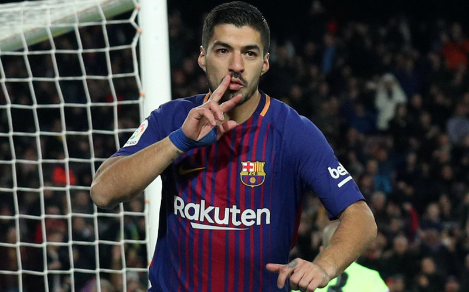
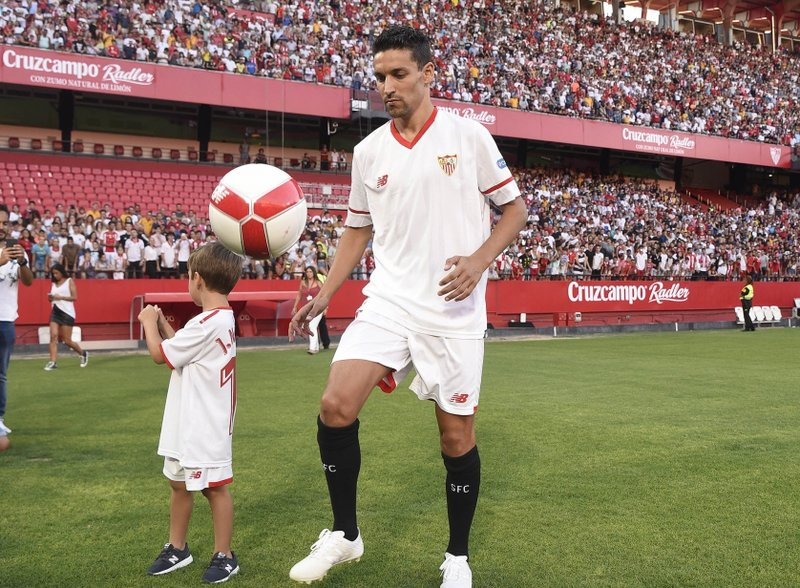
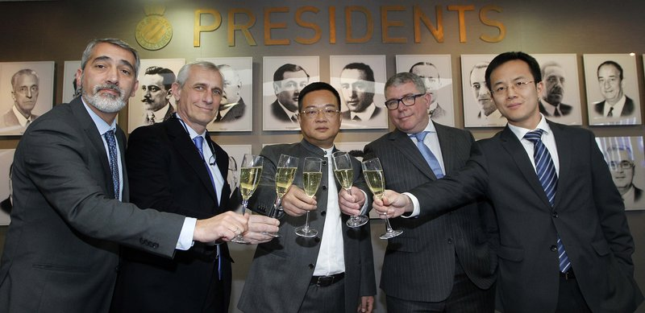

Al clàssic en el millor moment
Després del dia de descans d’ahir, la plantilla blaugrana torna avui als entrenaments amb els cinc sentits posats en l’atractiva visita de dissabte al Santiago Bernabéu. Un clàssic que arriba en un moment de confiança per al conjunt blaugrana en general i de Luis Suárez en particular. Diumenge passat, coincidint amb el partit contra el Deportivo al Camp Nou, l’uruguaià va signar un doblet per tal de reafirmar la línia ascendent de cara a porteria que ha acreditat durant l’últim mes de competició. De fet, des del 18 de novembre ha signat sis dels nou gols que acumula en aquesta campanya –tots en la lliga– i ha posat fi al període de sequera realitzadora que el va acompanyar entre l’octubre i el novembre.
Quatre d’aquests gols coincideixen amb les tres últimes jornades de lliga, contra el Celta (1), el Vila-real (1) i l’esmentada contra el Dépor (2). Tot plegat, per començar a acreditar uns registres que s’ajusten als habituals en la seva profitosa carrera com a caçagols. A hores d’ara, ja és el segons màxim golejador del Barça rere Leo Messi, i s’alça fins al tercer lloc del rànquing de màxims artillers del campionat, juntament amb Zaza (València) i Stuani (Girona), també amb nou dianes en el seu compte particular.

L’orgull de Nervión
Parlar de Jesús Navas és parlar del Sevilla, d’una relació d’amor etern per uns colors cada cop menys habitual en el planeta futbolístic. Dotat des dels seus inicis amb unes qualitats físiques i tècniques innates i amb la fortalesa mental necessària per superar un desafiament contra ell mateix que hauria pogut posar fi a la seva meteòrica carrera, l’extrem de Los Palacios era de llarg la persona més feliç sobre la gespa del Pizjuán divendres passat. N’hi havia per ser-ho. Amb la mateixa il·lusió del primer dia, quan amb tan sols setze anys va aterrar a Nervión ja envoltat d’una aurèola especial, Navas es va convertir en la darrera jornada en el futbolista amb més partits oficials en la història del Sevilla. “Aquest rècord és un orgull, i més complir-lo amb el meu equip, davant de la meva afició i amb la meva gent”, expressava l’hàbil futbolista andalús després de completar 416 partits i superar així l’exjugador i actual director del planter sevillista Pablo Blanco (415 duels entre el 1971 i el 1984).
Una fita històrica carregada de simbolisme, traspassada de capità a capità més de tres dècades després, per la mateixa persona que, veient-lo jugar en el cadet de la UD Los Palacios, va apostar fervorosament per dur-lo a jugar al Sevilla. “El dia que vaig veure’l jugar per primer cop va ser un dissabte en un terreny de joc ple de bassals. Quan la pilota entrava en un, tots els jugadors que anaven a buscar-la es mataven allà, però arribava ell i en un no res treia la pilota i se l’enduia”, rememorava Blanco en una entrevista concedida al canal oficial del club. Debutant sota les ordres de Caparrós a Montjuïc i protagonista del notori creixement experimentat pel club de Nervión des de principis de segle, la seva meteòrica evolució va estar a punt de quedar truncada a causa de constants atacs d’ansietat provocats pel fet de veure’s allunyat de la seva família i de Sevilla. No obstant això, i després de viure dos episodis en què va haver de declinar l’oportunitat de jugar amb el combinat estatal sub-21, primer, i amb l’absolut, més tard, la bona línia de treball seguida pels serveis mèdics de l’entitat andalusa i la seva força de voluntat van permetre-li fer el salt esperat. “Estic perfectament capacitat per anar convocat si Del Bosque ho considera oportú”, declarava un Navas que, poques setmanes després, s’acabaria convertint en un dels protagonistes en l’acció del gol decisiu d’Iniesta a Sud-àfrica. Superada amb escreix la seva particular batalla psicològica, Navas va posar el rumb cap a la Premier per defensar en aquesta ocasió els colors del City.
Sota l’aixopluc d’homes com Silva i Negredo, l’extrem de Los Palacios va continuar engreixant un ja de per si extens palmarès de títols, entre els quals destaca un mundial, una Eurocopa i dues copes de la UEFA, abans de tornar a la seva estimada Sevilla. “Va haver-hi altres opcions però vaig esperar fins al final perquè volia tornar, tornar a donar-ho tot per una afició que sempre m’ha mostrat el seu afecte, i això va ser clau, com la meva família”, destacava un Navas que, amb un contracte de quatre anys a Nervión, està en disposició de fer més gran un rècord estratosfèric.

“La Champions és i serà el nostre objectiu”
Electro Circle soms un grup de DJ's de la Garrotxa, amb ganes de passarso be. A sota podem veure el logo i els 11 DJ's que son:
El president de l’Espanyol, Chen Yansheng, no acostuma a parlar gaire. La barrera idiomàtica i el fet que visqui a la Xina fan de cada aparició pública un veritable esdeveniment per a la massa social blanc-i-blava. Aquesta vegada les seves paraules adquirien més importància per la delicada situació esportiva de l’equip. El jerarca es va mantenir pacient en la seva forma de treballar. No és un mandatari que s’encengui amb facilitat. El seu posat continua sent seriós i meditatiu, malgrat que es va rebel·lar contra aquesta figura. “No em penedeixo d’entrar en aquest món del futbol, jo també soc passional”, remarcava, malgrat que el seu aspecte gestual anava cap a una altra banda. Chen Yansheng és d’idees clares i en la primera resposta va deixar clar que el seu full de ruta no ha variat gens ni mica després de gairebé dos anys a la presidència. En aquell bateig va assegurar que el club aniria a la Champions en tres anys. Ahir va tornar a picar a la porta de les il·lusions. “La Champions és i sempre ha estat el nostre objectiu i ho farem tot per arribar-hi; en l’esport hi ha factors imprevisibles, però no renunciarem a aquesta meta”, declarava amb rotunditat el mandatari, que no perd de vista la màxima competició continental. Això sí, aquesta vegada no es va posar un límit temporal, però va concretar quina nota posaria al 2017, que ara es tanca. “Continua sent un sis, no hem progressat”, deixava anar amb seguretat, un clar missatge als seus màxims col·laboradors.
